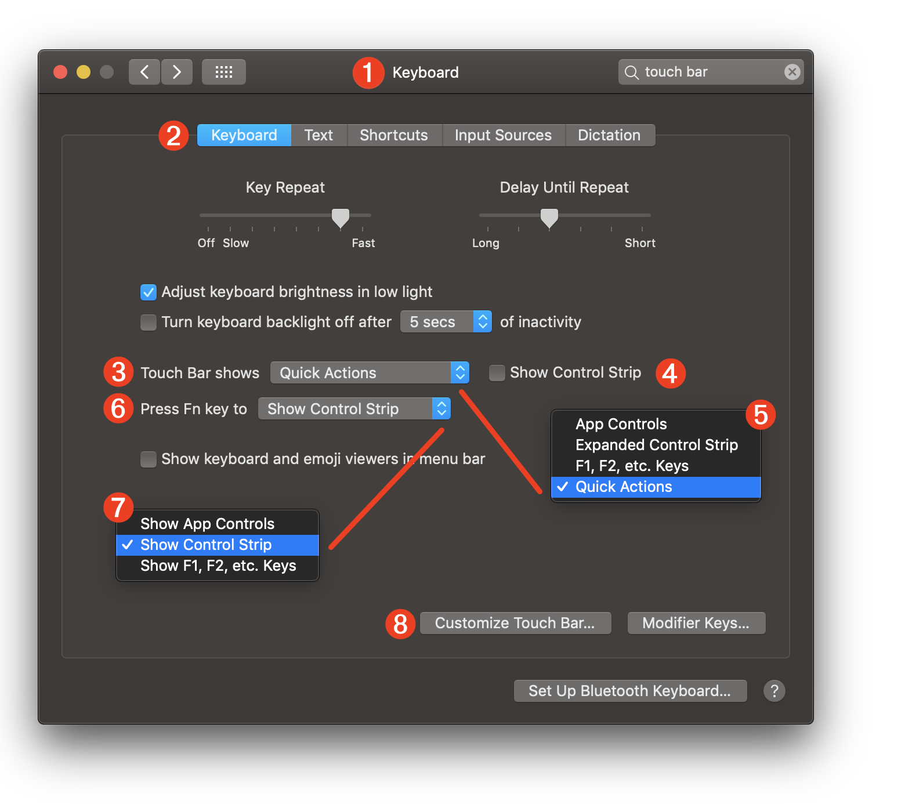
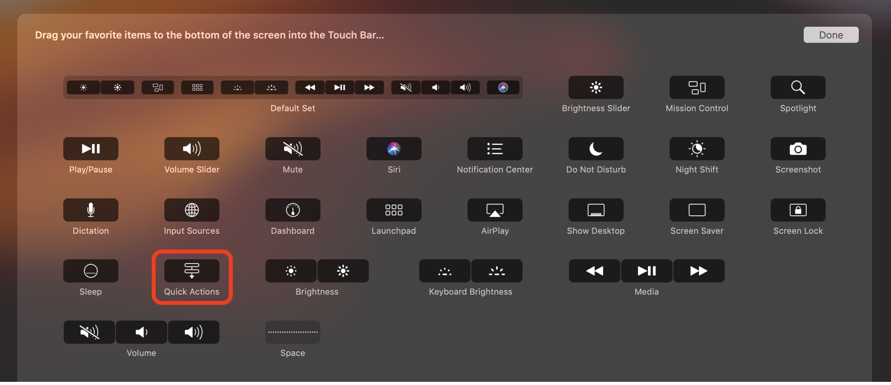
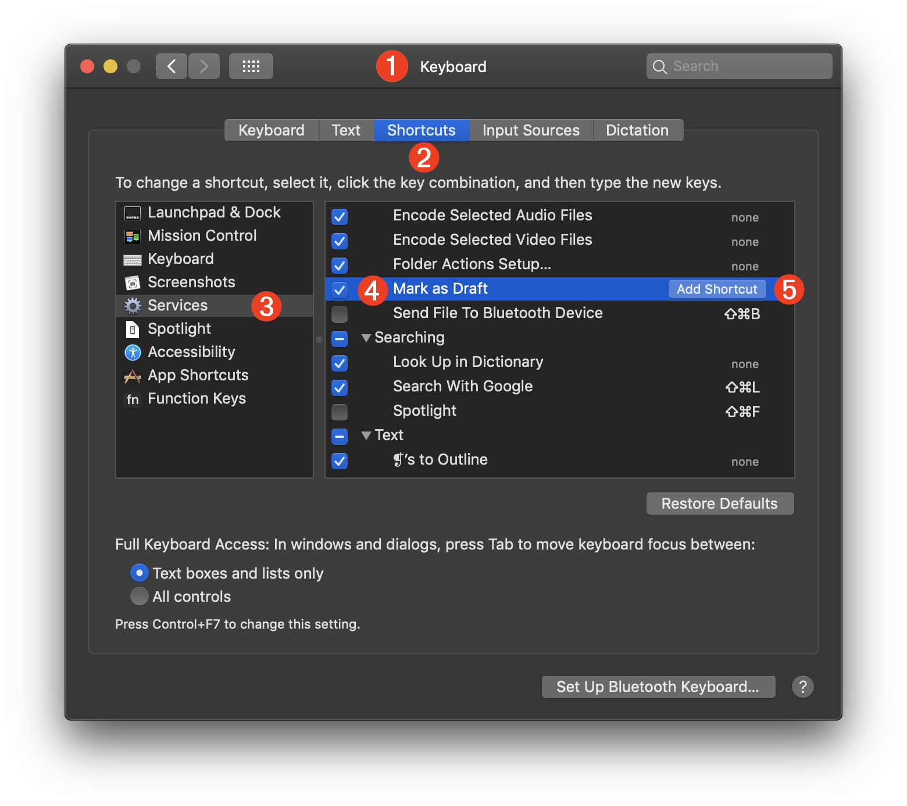

TAP TO HIDE SIDEBAR


Keyboard Settings
The preferences for the display and use of Automator workflow Extensions and Services are located within the Keyboard preference pane of the System Preferences application.
Touch Bar
The preferences for determining the display of the Touch Bar are accessed in the Touch Bar category of the Keyboard tab of the Keyboard preference pane in the System Preferences application.

1 The Keyboard preference pane of the System Preferences application.
2 The Keyboard tab of the Keyboard preference pane of the System Preferences application.
3 A popup menu for selecting which set of items are displayed on the Touch Bar by default.
4 A checkbox whose selection indicates that a condensed version of the Control Strip should be displayed on the Touch Bar.
5 The options for the default Touch Bar set.
6 A popup menu for selecting the set of items to be displayed on the Touch Bar when the function key is pressed.
7 The possible sets of items to be displayed on the Touch Bar when the function key is pressed.
8 Clicking the “Customize Touch Bar…” button will display a screen overlay that contains the controls that may be dragged to the Touch Bar. (see below)
The Touch Bar overlay displays the available controls that can be used to customize the display and functionality of the Touch Bar. Individual controls can be dragged into position on the Touch Bar or from the Touch Bar.
The Quick Actions control (circled below) provides a mechanism or quickly accessing Automator Quick Actions from any customized configuration.

The Touch Bar configuration shown below is based upon the Default Set with the Quick Actions control (shown at far right) taking the place of the standard Siri control.
When the Quick Actions control is pressed, the Touch Bar display will instantly switch to displaying a horizontally scrollable list of Quick Actions in the order outlined in the Touch Bar category in the Extensions system preference pane.
Services
The preferences for controlling the use of System Services are located in the Services category of the Shortcuts tab of the Keyboard system preference pane.

1 The Keyboard preference pane of the System Preferences application.
2 The Shortcuts tab of the Keyboard preference pane of the System Preferences application.
3 When the Services category is selected, a list of all System Services is displayed in the pane.
4 A System Service can be activated or deactivated by selecting or deselecting the checkbox to the left of the System Service title.
5 System Services may optionally be assigned keyboard shortcut combinations by clicking the “Add Shortcut” button and then typing the keyboard key combination you wish to use for that service. An assigned keyboard shortcut will be available when the service is contextually available.
DISCLAIMER